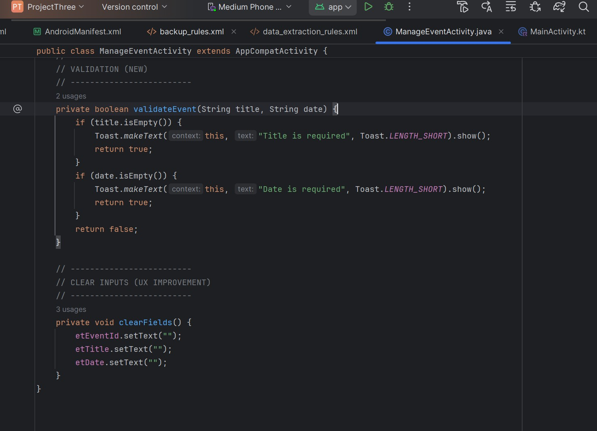

This artifact is an Android-based Event Management Application originally developed in CS-360. The application allows users to create accounts, log in, and manage events through a local SQLite database, supporting full CRUD functionality. The application also includes optional SMS notifications for event reminders. This system supports user-centered decision-making by enabling individuals to organize and manage important events efficiently.
To improve this artifact, I focused on optimizing database design, improving data integrity, enhancing performance, and strengthening system reliability. I refactored the SQLite schema, improved input validation, and optimized queries for better performance. I also enhanced the connection between the user interface and the database layer and added logging for debugging and monitoring.
Additionally, improvements were made to the event management interface, including validation and error handling to ensure required fields are completed and invalid input does not cause failures.
private boolean validateEvent(String title, String date) {
if (title.isEmpty()) {
Toast.makeText(this, "Title is required", Toast.LENGTH_SHORT).show();
return true;
}
if (date.isEmpty()) {
Toast.makeText(this, "Date is required", Toast.LENGTH_SHORT).show();
return true;
}
return false;
}
// UX Improvement
private void clearFields() {
etEventId.setText("");
etTitle.setText("");
etDate.setText("");
}

These enhancements improved both data validation and user experience. The validation method ensures required fields are completed, preventing invalid data from being stored in the database. The clearFields method improves usability by resetting inputs after operations are completed. Together, these improvements enhance data integrity, reduce user errors, and improve system reliability.
This artifact demonstrates skills in database design, normalization, and CRUD operations using SQLite. It also reflects experience in Android development, data validation, code refactoring, performance optimization, debugging, and system testing.
This artifact demonstrates the ability to solve data management challenges that improve user interaction and support decision-making. It reflects the design of a full application integrating frontend and backend systems, the use of development tools and database technologies, and the ability to evaluate and improve system performance and structure.
Enhancing this artifact improved my understanding of how databases support real-world applications. I learned that data structure, validation, and query optimization directly impact both performance and user experience. One challenge was improving performance while maintaining simplicity, which I addressed by refining queries and keeping code structured and maintainable. This experience strengthened my ability to build reliable and efficient applications.